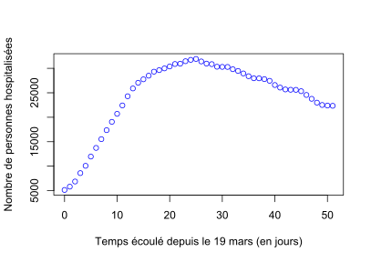
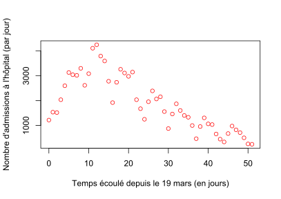
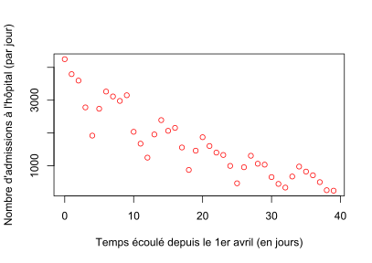
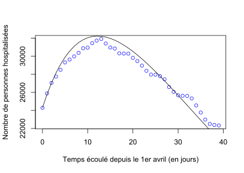
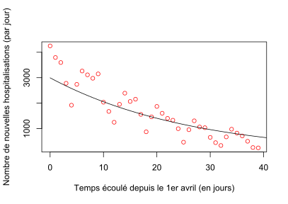
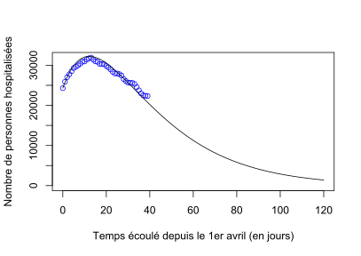
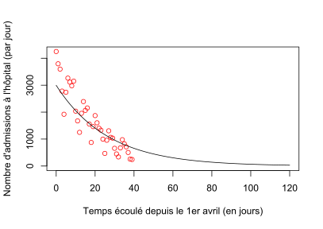
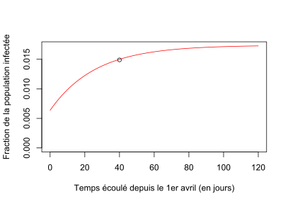

Introduction à la modélisation en épidémiologie : COVID-19 - dynamique épidémique pendant le 1er confinement
Frédéric Hamelin, le 10 mai 2020.
Mis à jour le 30 mars 2021 d'après l'application de Maimouna Diarra (élève ingénieure M1 Agro Rennes 2021) basée sur la version précédente du TD.
Dans l'épidémie de COVID-19, les individus infectés peuvent être symptomatiques ou asymptomatiques. Les données sur le nombre d'individus infectés dans la population sont peu fiables car elles dépendent des tests éventuellement réalisés. Les individus symptomatiques peuvent faire une forme sévère de la maladie et être hospitalisés. Les données concernant les individus hospitalisés sont fiables en principe.
Modèle épidémiologique
Nous ferons un certain nombre d'hypothèses volontairement grossières pour simplifier l'étude en première approximation. Ces hypothèses incluent :
- la population française est spatialement homogène en France métropolitaine,
- les hommes et les femmes sont égaux vis-à-vis du virus,
- la structure en âge de la population peut être ignorée pour modéliser l'épidémie,
- les individus hospitalisés ne transmettent plus l'infection,
- la guérison confère une immunité permanente.
Ces hypothèses sont plus que grossières mais permettent néanmoins de commencer à travailler. Techniquement, cela nous permettra de limiter le nombre de paramètres à estimer. Autrement, le modèle risquerait d'être sur-paramétré au regard des données et des connaissances dont on dispose sur le virus.
Nous définissons les variables
- : nombre d'individus sensibles au virus (non-infectés) à la date ,
- : nombre d'individus infectés et infectieux non-hospitalisés à la date ,
- : nombre d'individus infectés hospitalisés à la date ,
- : nombre d'individus "retirés" de l'épidémie (guéris et immunisés ou décédés) à la date ,
et les paramètres
- : taux de transmission par unité de temps (fréquence des contacts probabilité d'infection),
- : taux de "guérison" par unité de temps (inverse du temps moyen avant guérison ou décès),
- : taux d'hospitalisation par unité de temps (inverse du temps moyen avant hospitalisation),
- : taux de guérison ou décès à l'hôpital (inverse du temps moyen avant sortie de l'hôpital).
Nous considérons le modèle compartimental suivant :
ce qui se traduit mathématiquement par le système d'équations différentielles suivant :
ce qui peut se lire comme suit : La taille de la population est définie comme Chaque individu infecté réalise un certain nombre de contacts avec d'autres individus par unité de temps (c'est la fréquence des contacts). Pour chaque contact, la probabilité de rencontrer un individu sensible est égale à la proportion que représentent les individus sensibles dans la population : . Ainsi le nombre de nouvelles infections par unité de temps est .
La reproductivité du pathogène est défini comme C'est le nombre d'infections secondaires générées par un individu infecté dans la population initiale :
- si une vague épidémique se forme.
- si l'épidémie s'éteint progressivement.
La probabilité d'être hospitalisé suite à l'infection est
Nous allons maintenant tenter d'ajuster ce modèle aux données de COVID-19 en France sous R. Ces données concernent le nombre de personnes hospitalisées à la date , , ainsi que le nombre d'admissions à l'hôpital à la date (par unité de temps) :
Le modèle épidémiologique est à base d'équations différentielles ordinaires (ordinary differential equations). Les simulations se baseront sur la fonction ode de la librairie deSolve de R à importer en début de script.
library(deSolve) # Import de la fonction ode
Commençons par nettoyer l'environnement de travail :
rm(list=ls()) # Efface les variables créées lors des exécutions précédentes
graphics.off() # Ferme les fenêtres ouvertes lors des exécutions précédentes
Téléchargement et traitement des données
Les données sont disponibles sur le site suivant :
https://www.data.gouv.fr/fr/datasets/donnees-hospitalieres-relatives-a-lepidemie-de-covid-19/
Nous baserons notre travail sur les données hospitalières suivantes (à la date du TD) :
- donnees-hospitalieres-covid19-2020-05-10-19h00.csv
- donnees-hospitalieres-nouveaux-covid19-2020-05-10-19h00.csv
Importons les données sous R :
# Lien permanent vers les données d'hospitalisations
urlH = url("https://www.data.gouv.fr/fr/datasets/r/63352e38-d353-4b54-bfd1-f1b3ee1cabd7")
# Lien permanent vers les données d'admissions
urlA = url("https://www.data.gouv.fr/fr/datasets/r/6fadff46-9efd-4c53-942a-54aca783c30c")
# Nombre d'individus hospitalisés (H) - à partir du 19 mars
dataH = read.csv2(urlH, header=TRUE, sep=";")
# Nombre d'admissions (A) à l'hôpital par jour
dataA = read.csv2(urlA, header=TRUE, sep=";")
Vérification de la nature des variables :
str(dataH) # la fonction str () permet de nous renseigner sur la nature de chaque
str(dataA) # variable contenue dans les tableaux
On remarque que la variable “jour” est considérée comme un facteur. Nous allons donc la convertir en date pour faciliter le triage des données quand on a va définir la fenêtre temporelle d'étude.
dataH$jour = as.Date(dataH$jour) # conversion de variable jour en date
dataA$jour = as.Date(dataA$jour)
La deuxième colonne du jeu de données "H" distingue les hommes et les femmes par des 1 et des 2. Comme le modèle n'est pas structuré selon ces catégories, nous ne conserverons que les lignes 0 qui agrègent hommes et femmes :
dataH = dataH[dataH$sexe==0,] # pas de distinction entre les hommes et les femmes en selectionnant uniquement les lignes 0 de la colonne "sexe"
Pour ce qui suit, nous ne conserverons que les informations relatives aux hospitalisations, décès et guérisons, par départements :
dataH = dataH[,c(-2,-6,-7)] # on élimine les colonnes suivantes: "sexe", "rad" et "dc"
dataA = dataA[,c(-4,-5,-6)] # on élimine "incid_rea", "incid_dc" et "incid_rad"
Pour cette étape, nous voulons sélectionner uniquement les données qui se trouvent entre le 19/03/2020 et le 11/05/2020 pour les départements métropolitains en excluant la Corse :
# on définit notre fenêtre temporelle
dataH = dataH[dataH$jour>"2020-03-19" & dataH$jour<"2020-05-11", ]
dataA = dataA[dataA$jour>"2020-03-19" & dataA$jour<"2020-05-11", ]
# sélection des départements métropolitains
dataH = dataH[(dataH$dep!="971")&(dataH$dep!="972")&(dataH$dep!="973")&(dataH$dep!="974")&(dataH$dep!="976")&(dataH$dep!="2A")&(dataH$dep!="2B"),]
dataA = dataA[(dataA$dep!="971")&(dataA$dep!="972")&(dataA$dep!="973")&(dataA$dep!="974")&(dataA$dep!="976")&(dataA$dep!="2A")&(dataA$dep!="2B"),]
Agrégation des données à l'échelle de la France par jour :
# on utilise la fonction aggregate pour additionner le nombre d'hospitalisés par jour
dataHH = aggregate(hosp ~ jour, data = dataH, FUN = sum)
dataAA = aggregate(incid_hosp~ jour, data = dataA, FUN = sum) # idem pour les admissions
Construction de 2 nouveaux vecteurs qui contiennent uniquement les données qui nous intéressent :
H = dataHH[,c(2)] # vecteur des hospitalisations
A = dataAA[,c(2)] # vecteur des admissions
Construisons un vecteur temps qui va correspondre à l'ordonnée de nos graphiques :
L = length(dataHH$jour) # longueur de la série temporelle
t = seq(0,L-1,1) # vecteur temps allant de 0 à L par pas de 1
Affichons le nombre de personnes hospitalisées en fonction du temps :
plot(t,H,col="blue",xlab="Temps écoulé depuis le 19 mars (en jours)",
ylab="Nombre de personnes hospitalisées")

Affichons les admissions quotidiennes en fonction du temps :
plot(t,A,xlab="Temps écoulé depuis le 19 mars (en jours)",
ylab="Nombre d'admissions à l'hôpital (par jour)",col="red")

Comme le confinement a débuté le 17 mars, la tendance croissante des deux premières semaines suit probablement une dynamique de transition suite à la mise en place du confinement.
Comme le modèle épidémiologique suppose que les paramètres épidémiologiques sont constants, en particulier le taux de transmission du virus, nous commencerons les analyses 15 jours après le début du confinement, soit à partir du 1er avril :
T0 = 13 # Décalage du point de départ 13 jours après le 19 mars (le 1er avril)
H = H[T0:L];A=A[T0:L] # Troncations des données
L = length(H) # Mise à jour de la longueur des séries temporelles
t = seq(0,L-1,1) # et du vecteur temps
Visualisation des données tronquées à partir du 1er avril :
plot(t,H,xlab="Temps écoulé depuis le 1er avril (en jours)",
ylab="Nombre de personnes hospitalisées",col="blue")
plot(t,A,xlab="Temps écoulé depuis le 1er avril (en jours)",
ylab="Nombre d'admissions à l'hôpital (par jour)",col="red")

Simulations et ajustement du modèle aux données
Résolution numérique du modèle épidémiologique
Commençons par définir les paramètres du modèle épidémiologique. Les valeurs données aux paramètres à estimer sont de grossières estimations initiales (ordres de grandeurs approximatifs).
Pour que le problème d'estimation des paramètres soit bien posé (c'est-à-dire pour que le modèle ne soit pas sur-paramétré par rapport aux données utilisées), il faut à minima fixer la valeur d'un paramètre (H. et al 2021). La période infectieuse a été estimée à 10.91 jours en moyenne (avec un écart-type de 3.95 jours) en Chine (You et al 2020). Nous retiendrons la valeur moyenne.
En pratique cependant, nous ne pourrons estimer que le nombre de personnes retirées de la dynamique épidémique durant le confinement : . Nous ne pourrons pas estimer la proportion de la population initialement immunisée (ou retirée) au 1er avril : . Néanmoins, les résultats que nous obtiendrons seront indépendants de la valeur initiale donnée à , comme vous pourrez le vérifier.
N = 64e6 # Population hexagonale approximative
rho = 1/10 # Temps moyen avant guérison ou décès : 10 jours
gamma = 1/14 # Durée moyenne de l'hospitalisation : 14 jours
R_0 = 1 # Reproductivité du virus en confinement
beta = R_0*rho # Taux de transmission (calcul très approximatif)
p = 0.1 # Probabilité d'être hospitalisé suite à l'infection
alpha = p*rho/(1-p) # Taux d'hospitalisation
P0 = c(beta,alpha,gamma) # Vecteur des paramètres
Définissons ensuite les variables du modèle et les conditions initiales (au 1er avril) :
H0 = H[1] # Le nombre de personnes hospitalisées au 1er avril
I0 = A[1]/alpha # Les admissions correspondent à A(t) = alpha*I(t)
R0 = N*0.01 # C'est la grande inconnue : mettons 1% d'immunisés
S0 = N-I0-H0-R0 # La taille de la population sensible au 1er avril
X0 = c(S0,I0,H0)# Vecteur d'état - pas besoin de simuler R=N-(S+I+H)
Définissons la fonction SIHR qui prend en arguments 3 vecteurs : temps, variables d'états, et paramètres :
SIHR = function(t, X, P){
beta = P[1] # Le taux de transmission
alpha = P[2] # Le taux d'hospitalisation
gamma = P[3] # Le taux de sortie d'hôpital
S=X[1];I=X[2];H=X[3] # Le vecteur d'état X contient: S, I et H
y = beta*S*I/N # Le nombre de nouvelles infections par jour
dS = -y # On exprime dS/dt = - beta*S*I
dI = y-(alpha+rho)*I # On exprime dI/dt = beta*S*I - (alpha+rho)*I
dH = alpha*I -gamma*H # On exprime dH/dt = alpha*I - gamma*H
dX=c(dS,dI,dH) # Renvoie dX/dt tel que demandé par la fonction ode
return(list(dX))
}
Nous sommes intéressés par identifier les paramètres et l'état initial du système (en particulier le nombre d'individus initialement infectés dans la population) qui sont les plus vraisemblables d'après les données. La vraisemblance d'un jeu de paramètres et de conditions initiales à estimer est la probabilité d'observer les données sachant ces paramètres et conditions initiales. Pour pouvoir calculer cette probabilité, il faut modéliser le processus d'observation de façon stochastique (avec variables aléatoires).
Modèle d'observation
Nous considérerons le modèle d'observation le plus simple qui soit pour des données de comptage : un tirage aléatoire dans une distribution de Poisson. Plus précisément, nous considérerons que le nombre de nouvelles hospitalisations à la date est une variable aléatoire discrète distribuée selon une loi de Poisson de moyenne . De la même façon, nous considérerons que le nombre de personnes hospitalisées à la date est tiré dans une loi de Poisson de moyenne (à vrai dire, ce sont plutôt les sorties d'hôpital qui devraient être modélisées de la sorte ; nous pourrons également tester cette variante ensuite).
Appelons le vecteur des paramètres et conditions initiales à estimer : Sous l'hypothèse (discutable) que les observations sont indépendantes conditionnellement au modèle épidémiologique (ce qui veut dire "sachant la dynamique prédite par le modèle théorique"), la vraisemblance (likelihood) peut s'écrire : Comme la fonction logarithme est monotone croissante, trouver le vecteur qui maximise est équivalent à trouver le vecteur qui maximise la log-vraisemblance (log-likelihood) qui est plus communément utilisée en pratique.
Maximisation de la vraisemblance
Construisons une fonction qui calcule la log-vraisemblance d'un jeu de paramètres et de conditions initiales. Cette fonction prend en argument le vecteur des paramètres et des conditions initiales à estimer :
logLike=function(theta){
P = theta[1:3] # Les paramètres beta, alpha, et gamma
X0 = theta[4:6] # Mise à jour des conditions initiales
X = ode(X0,t,SIHR,P) # Résolution du système d'EDO (modèle SIHR)
h = X[,4] # Hospitalisation théoriques : H(t)
a = P[2]*X[,3] # Admissions théoriques : alpha*I(t)
LLH = dpois(H,h,log=T) # Probabilité d'observer H (loi de Poisson)
LLA = dpois(A,a,log=T) # Probabilité d'observer A (Poisson)
LL = sum(c(LLH,LLA)) # Log transforme produit des probas en somme
return(LL) # Renvoie la log-vraisemblance (likelihood)
}
Avant d'appeler les fonctions ci-dessus, on définit le vecteurs des paramètres et conditions initiales :
theta0 = c(P0,X0) # Concatène paramètres et conditions initiales
Utilisons la fonction optim pour trouver les paramètres et conditions initiales qui maximisent la vraisemblance du modèle.
opt = optim(theta0,logLike,control=list(fnscale=-1)) # Maximise logLike
Résultats
On récupère les paramètres et conditions initiales dont la vraisemblance est maximale :
# Les paramètres optimaux
beta = opt$par[1]; alpha = opt$par[2]; gamma = opt$par[3]
# Les conditions initiales optimales
S0 = opt$par[4]; I0=opt$par[5]; H0 = opt$par[6]
On met à jour les vecteurs des paramètres et conditions initiales :
X0 = c(S0,I0,H0) # Vecteur des conditions initiales
P0 = c(beta,alpha,gamma) # Vecteur des paramètres mis à jour
On affiche trois quantités importantes :
R_0=beta/(alpha+rho)*S0/N # Reproductivité estimée
print(R_0)
p=alpha/(alpha+rho) # Probabilité d'être hospitalisé
print(p)
print(1/gamma); # Temps moyen d'hospitalisation
On trouve :
- Nombre de reproduction de base (en confinement) :
- Probabilité d'être hospitalisé suite à l'infection :
- Temps moyen d'hospitalisation : jours
La valeur de est globalement cohérente avec celles estimées par les études listées dans les Références, et n'est pas surprenante en période de confinement ().
On calcule la solution du modèle pour les paramètres et conditions initiales estimés :
T = 120; t = 0:T # Mise à jour du vecteur temps
X = ode(X0,t,SIHR,P0) # Calcul de la solution optimale
On compare visuellement la solution du modèle et les observations :
# Affiche le nombre d'individus hospitalisés (données et modèle)
plot(0:(L-1),H,xlab="Temps écoulé depuis le 1er avril (en jours)",
ylab="Nombre de personnes hospitalisées",col="blue")
lines(X[,1],X[,4])

plot(0:(L-1),A,xlab="Temps écoulé depuis le 1er avril (en jours)",
ylab="Nombre de nouvelles hospitalisations (par jour)",col="red")
lines(X[,1],alpha*X[,3])

Estimation de la fraction de la population infectée
"Prédire est un art difficile, surtout en ce qui concerne l'avenir". Néanmoins, juste pour prendre du recul sur la dynamique épidémique, nous pouvons extrapoler les dynamiques précédentes sur un horizon de 4 mois (ce qui correspondrait à la dynamique prédite si nous devions rester confinés jusque fin juillet) :
plot(0:(L-1),H,xlim=c(0,T),ylim=c(0,max(H)),xlab="Temps écoulé depuis le 1er avril (en jours)", ylab="Nombre de personnes hospitalisées",col="blue")
lines(X[,1],X[,4])

plot(0:(L-1),A,xlim=c(0,T),ylim=c(0,max(A)),xlab="Temps écoulé depuis le 1er avril (en jours)", ylab="Nombre d'admissions à l'hôpital (par jour)",col="red")
lines(X[,1],alpha*X[,3])

Enfin, on peut afficher la fraction de la population qui a été infectée par le virus durant le confinement (depuis le premier avril) et est donc immunisée ou en voie de l'être le 10 mai (sans décompter les décès) :
le10mai=length(H)
F=(N-X[,2]-R0)/N # Fraction de la population qui a été infectée durant le confinement
plot(le10mai,F[le10mai],xlim=c(0,T),ylim=c(0,max(F)),xlab="Temps écoulé depuis le 1er avril (en jours)",
ylab="Fraction de la population infectée");
lines(X[,1],F,col="red")

On voit qu'environ 1,5% de la population aurait été infectée durant le confinement (depuis le 1er avril) selon le modèle, soit 960 000 personnes environ. Cela ne dit rien de la proportion d'immunisés dans la population, car il faut rajouter les immunisés au 1er avril, , qui est inaccessible par cette seule étude.
En comparaison, Roques et al (2020) estiment la proportion de la population infectée durant cette même période (du 1er avril au 10 mai) à 3.7% (95%-CI: 3.0-4.8%), sur la base de jeux de données différents (tests et décès). Cependant, Salje et al (2020) estiment qu'environ 1% (entre 0,5% et 2%) de la population aurait été infectée sur la même période (Figure 3 ; panel E).